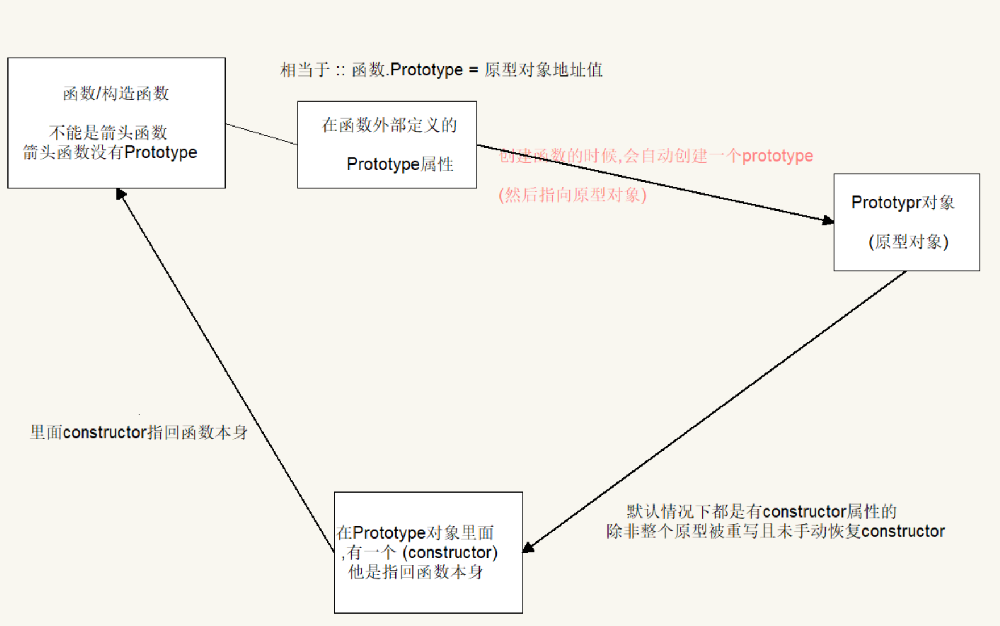
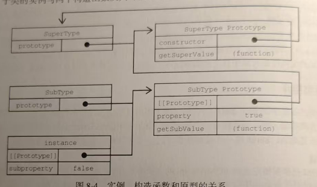

ECMA-262把原型链定义为ECMAscript的主要继承方式。 基本思想就是通过原型继承多个引用类型的属性和方法。重温一下构造函数
构造函数有一个prototype属性指向原型对象 , 原型对象里面有一个constructor属性指回构造函数 ， 只有这样是远远不过的 ， 因此每个对象都有[[prototype]]（__proto__），他指向父类构造函数的原型对象，就是因为他[[prototype]] 实现了原型链 
function SuperType() {
this.property = true
}
SuperType.prototype.getSuperValue = function () {
return this.property
}
function SubType() {
this.subproperty = false
}
// 继承 SuperType
SubType.prototype = new SuperType()
SubType.prototype.getSubValue = function () {
return this.subproperty
}
let instance = new SubType() // SuperType() {}
console.log(instance.getSuperValue()); // true
console.log(instance.getSubValue()); // false
这段代码定义了SuperType函数 ， getSuperValue的原型方法 和 SubType()函数 ， getSubValue原型方法 ， 然后SubType继承 SuperType的实例方法
他的construcotr为什么是 SuperType 就是因为 当访问对象的某个属性时，会先在自身属性中查找，若不存在则沿原型链逐层向上查找，直到找到该属性或到达原型链顶端（null）。 重点就是： 在读取属性的时候，首先会在实例上搜索这个属性，如果没有就往实例的原型上继续查找，在通过原型链继承的之后，搜索就可以继续向上搜索原型的原型。